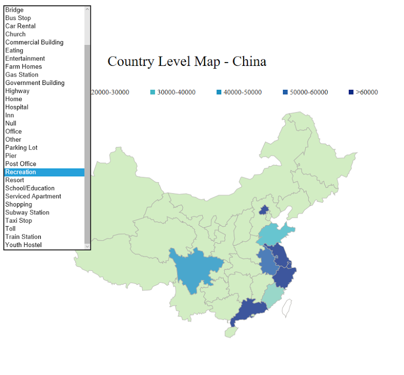

China Map Visualization on Mobility Data
When I was a research assistant at Institute for Health Metrics and Evaluation (IHME) this summer,
I helped our team visualize mobility data in China using D3.js. Since we had data with different granularities, I created three visaulizations:
coutry level map, city level map and every day activity count per city.
By clicking on on the province, you can see the detailed information about this province about each city in this area.
Then by clicking on the city, you can see the every day activity count in 24 hours.
Design Elements:
-
Hover tooltips
-
Dropdown menu on location
 We had data at different locations so I set location as global filter and created a dropdown menu here on the top left. So if you wanted to look at the data at that location, you could easily choose one and it would be applied to all three visualizations.
Then as for the default location, I used 'All' which represented the sum of all activity count. -
Missing data
We did not have enough data for all cities in China. As for the missing data, I used white color to represent it and then in the tooltip, I used 'Lack the data for this city'.